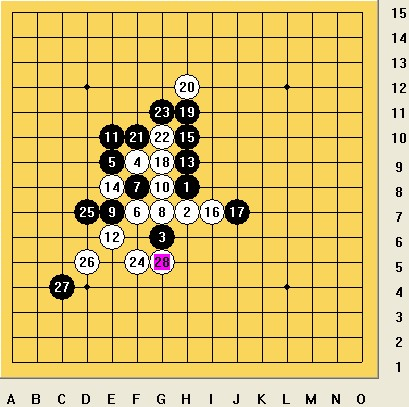
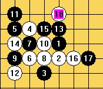
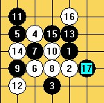
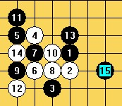
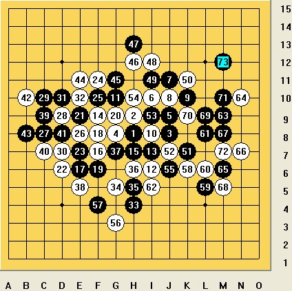

李洋与田村一诚的两盘棋
#1 李洋与田村一诚的两盘棋 作者：偶是逆风独立 发表时间：2012-3-30 13:15:59
与田村一诚的两盘棋
作者：李洋 文章来源：中国连珠网
田村一诚拜访俱乐部受到了“大礼款待”，4：0让吴晓宁无奈，2：0张红梅连换规则“上瘾”，逼王晨漏招投子。
3月25日下午，我向来访的日本棋手田村一诚请教两盘棋，很幸运我以2比0取胜。
第一盘：田村一诚(黑)VS李洋(白)，溪月8打，不换，白胜

田村一诚开出溪月要8打，我选择了这个白四，这个5我第一次见到，虽然很陌生，但还是决定留下这个点试一下。6到12手均属于正常手段，13之后我考虑很长时间选择了这个14，黑15可选择的点并不多，我认为有两个走法比较好，第一个走法是走G9活三，这样白棋还要考虑6、8、2这个眠三冲不冲，如果冲了黑棋多一个活2，外势不错，后面很好控制(图1)。如果不冲黑17直接活三，白18挡哪边又是一个问题(图2)。第二个走法就是黑15直接走在J7，盖住白棋的横眠三同时自己成一个活2，控制住白棋4、14这个活2，使白棋不能在左边直接进攻(图3)。

图1

图2

图3
实战黑15非常积极的一手，也是不错的走法，白棋16手是本局的转折点，如果16手一味的跟着黑棋防守，那就不是全盘陷入被动局面的问题了，黑棋可以直接在上面必胜。所以我毫不犹豫的选择先冲四再挡住黑棋的跳三，形成白棋VCF抓黑棋33禁手的局面，争到全局的主动权。黑棋19、21、23很无奈，被迫与白棋进行交换。交换之后白棋在下方优势明显，24手做VCF成必胜局面，田村一诚稍作抵抗之后投子认输。
第二盘：李洋(黑)VS田村一诚(白)，金星3打，不换，黑胜

第二盘我开出金星要3打。这个变化大家都不陌生，但是我只记到35手，后面会有什么变化根本没研究过。经过长考之后，我走出了37、39、41、43，消耗了白棋在左面的材料，但D5这种点依然存在隐患。白44挡住活三成VCF，这个时候我陷入第二次长考，45冲四不用多想，这时候丢先手就等于失败，D5、i11白棋都可以做出VCF。所以我现在要做的是在不丢先手的情况下先抢到其中一个点，这个点自然选择了i11，反复计算了一下这个局部，确认无误后走到了49手。
如果说田村一诚要找这盘棋失利的原因，那么我认为第50手就是第一个错误。黑棋的进攻主要是在右面的中部和下方，50手挡在K11，虽然防住了黑棋的VCF，但显然低估了黑棋在下方的潜力，并且使白棋在右面防守的子力上下失衡，所以50手我认为挡在K9更好些。黑棋51、53、55都是正常手段，55之后田村一诚进行长考，56手不能挡在中间，最终56选择在G3跳冲。58手是第二个错误，此时黑棋的进攻材料并不够，但这个冲四直接帮助黑棋冲出VCF。白60很无奈的一手，61、63对黑棋很关键，迅速抢占，65做VCF，66是最致命的失误，此时59手发挥了作用，黑67跳三白棋只能挡在下边，后面黑棋VCF取胜。之后拆解，66走在67是唯一防，那样的话最终结果就是局部交换干净，黑棋补到D5提和。
相关链接：
田村一诚京城对弈，中日棋手交流在民间
在大连工作的日本年轻棋手田村一诚，昨日下午借出差到京机会，来到那威五子棋俱乐部与张红梅、吴晓宁、李洋、王晨进行了交流，宋霰携女儿担任翻译，到场的还有张冬、姚志勇。
#2 Re:李洋与田村一诚的两盘棋 作者：偶是逆风独立 发表时间：2012-3-30 13:22:01
图我这边能看到。。。如果你无法显示请说下
#3 Re:李洋与田村一诚的两盘棋 作者：杨咏 发表时间：2012-3-30 18:27:43